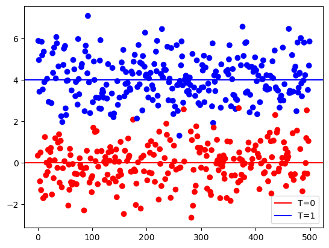
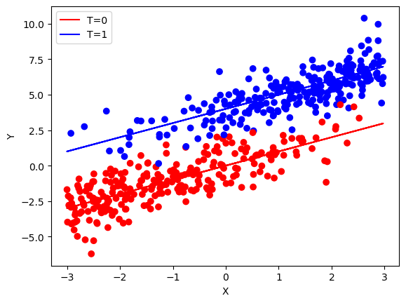
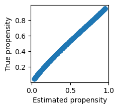

import numpy as np
import statsmodels.api as sm
import matplotlib.pyplot as plt
import pandas as pd
np.random.seed(42)Lecture 12 - Causal Inference
Average Treatment Effect Estimation
The Average Treatment Effect is: \tau = \mathbb{E}[Y_i^{(1)} - Y_i^{(0)}] where
- Y_i^{(1)} is potential outcome for unit i under treatment
- Y_i^{(0)} is potential outcome for unit i under control
T_i is the treatment assignment for unit i:
- T_i=1 if unit i assigned to treatment
- T_i=0 if unit i assigned to control
For each unit i, we only observe one of Y_i^{(1)}, Y_i^{(0)}.
Randomized Treatment
We first consider a randomized treatment (no confounding). That is:
Y_i^{(1)}, Y_i^{(0)} \text{ ind } T_i.
n = 500
# randomly draw treatment
t = np.random.binomial(1, 0.5, size=n)
# treatment effect
tau = 4
# outcome
y = tau * t + np.random.normal(size=n)plt.scatter(range(n), y, c=['red' if i == 0 else 'blue' for i in t], marker='o')
plt.axhline(y = 0, color = 'red', label='T=0')
plt.axhline(y = tau, color = 'blue',label='T=1')
plt.legend()
Because \mathbb{E}[Y_i|T_i=1]-\mathbb{E}[Y_i|T_i=0] = \mathbb{E}[Y_i^{(1)}=Y_i^{(0)}], we can estimate the ATE by taking the difference in means:
np.mean(y[t==1]) - np.mean(y[t==0])np.float64(4.102895888143023)This is equivalent to fitting a linear model with an intercept.
T = sm.add_constant(t)
model = sm.OLS(y, T).fit()
model.paramsarray([-0.04568022, 4.10289589])Permutation test for H_0: \tau = 0 vs. H_1: \tau \neq 0
t_obs = np.mean(y[t==1]) - np.mean(y[t==0])
B = 1000
t_dist = np.zeros((B))
for b in range(B):
t_draw = t[np.random.choice(n, size=n, replace=False)]
t_dist[b] = np.mean(y[t_draw==1]- np.mean(y[t_draw==0]))p_value = sum([1 for t in t_dist if t >= t_obs]) / B
print(f"P-Value: {p_value:.4f}")P-Value: 0.0000plt.hist(t_dist, bins=20, alpha=0.7)
plt.axvline(t_obs, color='red')
plt.show()
Observed confounder
Suppose we have an observed confounder, X.
If we know X affects Y linearly, we can fit the model:
Y_i = \beta X_i + \tau T_i + \varepsilon_i,
where \varepsilon_i is Gaussian noise.
n = 500
x = np.random.uniform(-3, 3, n)
t = 1 * (x < 0) # if x < 0, you get the treatment, otherwise you get controltau = 4
y = x + tau * t + np.random.normal(size=n)plt.scatter(x, y, c=['red' if i == 0 else 'blue' for i in t], marker='o')
plt.plot(x, x, color = 'red', label='T=0')
plt.plot(x, x + tau, color = 'blue', label='T=1')
plt.legend()
If we do not adjust for X, we do not get the correct treatment effect:
# no adjustment for x
np.mean(y[t==1]) - np.mean(y[t==0])np.float64(1.055527008176574)Adjusting for X, we get the correct treatment effect:
df = pd.DataFrame({'t': t, 'x': x})
model = sm.OLS(y, df).fit()
model.paramst 4.064826
x 1.022550
dtype: float64Another way to calculate the treatment effect, adjusting for X:
x = x.reshape(n, 1)
H = x @ np.linalg.inv(x.T @ x) @ x.T
# H = X(t(X)X)^{-1}t(X)y_adj = (np.eye(n) - H) @ y # residuals after regression on x
t_adj = (np.eye(n) - H) @ t # residuals after regression on xmodel = sm.OLS(y_adj, t_adj).fit()
model.paramsarray([4.06482618])Propensity score
We could also use the propensity score to account for observed confounding, provided we have overlap.
We generate a simulated dataset:
x = np.random.uniform(-3, 3, n)
t_prob = 1/(1 + np.exp(-x)) # exp(x)/(1+exp(x)) -- this is the link function from logistic regression
t = np.random.binomial(1, t_prob, n)
tau = 4
y = x + tau * t + np.random.normal(size=n)For this simulated data, we check our min and max propensity scores to make sure overlap is satisfied. (That is, we can’t have P(T=1|X=x)=0 or 1.)
print(f"Min propensity: {t_prob.min():.4f}, Max propensity: {t_prob.max():.4f}")Min propensity: 0.0474, Max propensity: 0.9514# Plotting
plt.scatter(x, y, c=['red' if i == 0 else 'blue' for i in t], marker='o')
plt.plot(x, x, color='red', label='T=0')
plt.plot(x, x + tau, color='blue', label='T=1')
plt.xlabel('X')
plt.ylabel('Y')
plt.legend()
In practice, we do not know the propensity score. We estimate the propensity score using logistic regression (i.e. T vs. X).
# Propensity score model - logistic regression predicting T from X (no Y)
# q_hat(x) = estimated P(T=1 | X=x)
X_prop = sm.add_constant(x)
prop_model = sm.GLM(t, X_prop, family=sm.families.Binomial()).fit()prop_score = prop_model.predict(X_prop)Quick check: the estimated propensity score is close to the true propensity score:
plt.figure(figsize=(2,2))
plt.scatter(prop_score, t_prob)
plt.xlabel('Estimated propensity')
plt.ylabel('True propensity')Text(0, 0.5, 'True propensity')
We now calculate the inverse probability weighting estimator as an estimator of the ATE:
IPW = \frac{1}{n}\sum_{i=1}^n \frac{T_i Y_i}{q(T_i|X_i)} - \frac{(1-T_i)Y_i}{(1-q(T_i|X_i))}
# Inverse probability weighting (IPW)
ipw = y * t / prop_score - (1 - t) * y / (1 - prop_score)
# if t = 1, y/prop_score, if t = 0, y/(1-prop_score)
print("Mean of IPW:", np.mean(ipw))Mean of IPW: 4.115397597113825Colliders
What happens if we have a collider (instead of a confounder)?
We should NOT adjust for colliders. Let’s see what happens if we do in simulated data.
n = 500
# randomly draw treatment
t = np.random.binomial(1, 0.5, size=n)
# treatment effect
tau = 4
# outcome
y = tau * t + np.random.normal(size=n)
x = t + 0.5 * y + np.random.normal(scale = 0.2, size = n)To estimate ATE, take difference in means of treatment and control:
np.mean(y[t==1]) - np.mean(y[t==0])np.float64(4.072612320862982)If we mistakenly include X, we do not estimate the ATE well (the estimate is negative instead of positive!)
df = pd.DataFrame({'t': t, 'x': x})
model = sm.OLS(y, df).fit()
model.paramst -1.193571
x 1.743958
dtype: float64Another example of a collider
Here, the true treatment effect is zero.
n = 500
# randomly draw treatment
t = np.random.binomial(1, 0.5, size=n)
# treatment effect
tau = 0
# outcome
y = tau * t + np.random.normal(size=n)
x = t + 0.5 * y + np.random.normal(scale = 0.2, size = n)The difference in means of treatment and control is unbiased for the ATE:
np.mean(y[t==1]) - np.mean(y[t==0])np.float64(-0.06499427497289205)But if we mistakenly condition on the collider, we have a non-zero estimate, which is wrong.
df = pd.DataFrame({'t': t, 'x': x})
model = sm.OLS(y, df).fit()
model.paramst -1.725415
x 1.713434
dtype: float64